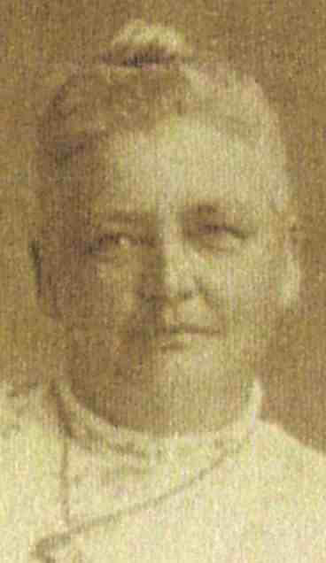
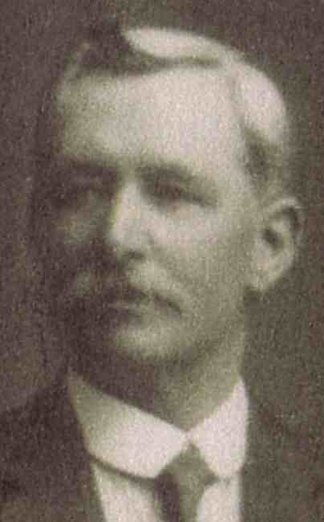
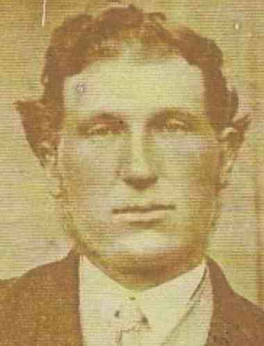
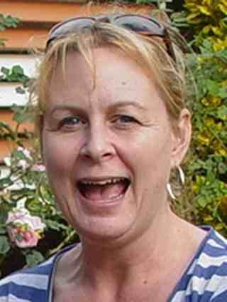

Individuals
This page contains an index of all the individuals in the database, sorted by their last names. Selecting the person's name will take you to that person's individual page.
| Surname | Name | Birth date | |
|---|---|---|---|
| ? | ? | about 1688 | |
| ? | about 1875 | ||
| ? | about 1875 | ||
| ? | about 1705 | ||
| ? | about 1691 | ||
| ? | about 1817 | ||
| ? | about 1810 | ||
| ? | about 1890 | ||
| ? | |||
| ? | |||
| ? | |||
| ? | |||
| ? | |||
| ? | |||
| ? | |||
| ? | |||
| ? | |||
| ? | |||
| ? | |||
| ? | |||
| ? | |||
| ? | |||
| ? | |||
| ? | |||
| ? | |||
| ? | |||
| Ann | about 1807 | ||
| Ann | about 1819 | ||
| Ann Silke | about 1806 | ||
| Anne | |||
| Bernadette | |||
| Charlotte | about 1801 | ||
| Clara | |||
| Dorothy | about 1756 | ||
| Elizabeth | about 1837 | ||
| Elizabeth | |||
| Elizabeth | about 1869 | ||
| Elizabeth | about 1796 | ||
| Ellen Elizabeth | about 1828 | ||
| Esther Eliotts | about 1716 | ||
| Fanny | |||
| Hannah | about 1818 | ||
| Harriet | about 1825 | ||
| Helena | |||
| Jane | about 1802 | ||
| Janet Christine | about 1940 | ||
| Jill | |||
| Joan | |||
| Jutta | about 1913 | ||
| Kerry | about 1913 | ||
| Maria | about 1817 | ||
| Martha | about 1828 | ||
| Mary | about 1800 | ||
| Mary | |||
| Mary | |||
| Mary | |||
| Mary | |||
| Olive Edna May | |||
| Pat | |||
| Sarah | |||
| Sarah | |||
| Sarah | about 1665 | ||
| Sarah | about 1837 | ||
| Sarah | about 1816 | ||
| Shirley Emma | about 1920 | ||
| Sophia Sarah | 1848 | ||
| Sydney | |||
| Abbey | Christina | 1900 | |
| James | about 1880 | ||
| James Wesley | 1884 | ||
| Adams | Janet Elizabeth | 19 July 1943 | |
| Roy R. S. | 1887 | ||
| Agnes | Honora | 11 July 1887 | |
| Alexander | Mary Ann | ||
| Allan | Agnes | 1851 | |
| Alexander | about 1792 | ||
| Alexander | 1846 | ||
| Amy | |||
| Angelo Ernest | 1877 | ||
| Annie Cairns | 1853 | ||
| Archibald | 1862 | ||
| Archibald John | 1878 | ||
| Archibald Park |  | about August 1872 | |
| Archibald Parkes (Park) |  | 13 February 1821 | |
| Aubrey Bell | 1885 | ||
| Catherine (Katy) Bell | 1856 | ||
| Charles Masson | 1887 | ||
| Christopher David | 21 December 1979 | ||
| Clement Robert Lindsay | 1883 | ||
| Craig Phillip | 10 February 1977 | ||
| David Lindsay | 12 February 1874 | ||
| Donald Lindsay |  | 15 July 1910 | |
| Doreen May | 1924 | ||
| Ebenezer (Ebenager) | 1880 | ||
| Emma Jade | 18 May 2005 | ||
| Fergus Alister | 9 May 1917 | ||
| Harriet | |||
| Hazel Lindsay | 23 January 1909 | ||
| James Alexander | 1879 | ||
| Jessie | 1861 | ||
| Jessie Ingles (Inglis) | 1876 | ||
| John Reid | 1848 | ||
| June Elizabeth | 13 June 1937 | ||
| Kenneth | |||
| Kenneth | |||
| Lilian Mabel | |||
| Lisa Terese | 31 August 1968 | ||
| Lucy Jean | 2 September 2002 | ||
| Maggie Anne | 19 October 2003 | ||
| Malcolm Cairns | 1883 | ||
| Malcolm Donald | 2 September 1943 | ||
| Margaret (Maggie) | 1878 | ||
| Margaret Elizabeth | 4 January 1908 | ||
| Mark James | 6 October 1965 | ||
| Michelle Catherine | 14 November 1966 | ||
| Minnie | |||
| William Joseph | 1895 | ||
| William Joseph | |||
| Allen | Ann | 1816 | |
| William | about 1780 | ||
| Altman | John William | about 1927 | |
| Rex | about 1907 | ||
| William Rex | about 1927 | ||
| Anderson | Robyn | about 1947 | |
| Andrew | Norman Eustice | 1904 | |
| William Henry | about 1884 | ||
| Andrews | Albin John | 28 February 1858 | |
| Daniel | 1827 | ||
| Margaret Barbara | 27 August 1890 | ||
| Martha Ellen | 1866 | ||
| Armstrong | Elizabeth | ||
| Arthur | ? | ||
| Ashwell | Victor Gordon | 1941 | |
| Atkins | Ann Sarah | 31 March 1868 | |
| Ault | Eunice Olive | 1883 | |
| Ayton | Christopher Gilbert | ||
| Lawrence | |||
| Margaret | |||
| Bade | Mary Polly | about 1873 | |
| Bain | James | about 1831 | |
| Baird | Kenneth Ross | ||
| Baker | Charlotte | about 1847 | |
| Ballard | Amy Jennifer | 19 October 1992 | |
| Andrew Gordon | 20 March 1960 | ||
| Benjamin Brian | 17 February 1985 | ||
| Brian Richard | 11 December 1933 | ||
| Bronwyn Margaret | 31 March 1967 | ||
| Christopher Alan | 17 October 1988 | ||
| David Richard | 10 April 1962 | ||
| Ellise Jordan | 31 January 1994 | ||
| Joshua Gordon | 18 March 1988 | ||
| Leanne Margaret | 2 January 1991 | ||
| Matthew Jarrod | 4 December 1991 | ||
| Mia Jasmine | April 2003 | ||
| Samuel James | 25 August 2000 | ||
| Timothy Hugh | 8 May 1965 | ||
| Barlett | Arthur | 23 July 1873 | |
| Charles | 1871 | ||
| Clara | 1855 | ||
| Clara Ann | 1863 | ||
| James | 1869 | ||
| John | 31 December 1826 | ||
| John William | 1859 | ||
| Maryann | 1828 | ||
| Maryann | 1850 | ||
| Rebecca | 13 February 1831 | ||
| Rebecca | 1867 | ||
| Reuben | 13 September 1824 | ||
| Reuben | 1857 | ||
| Robert | 1852 | ||
| Thomas | 1861 | ||
| William | 1865 | ||
| Barrie | Mavis Elizabeth | ||
| Bartlett | Alfred Ernset | 1874 | |
| Christian | 1803 | ||
| Edith | 1870 | ||
| Edward | 1793 | ||
| Edwin | 1870 | ||
| George | 1808 | ||
| George Henry | 1858 | ||
| James Neil | 1854 | ||
| John | 1805 | ||
| John (Snr) | about 1742 | ||
| John Foster | 1852 | ||
| Louisa | 1867 | ||
| Mary | 1791 | ||
| Rachel Jane | 1856 | ||
| Rebecca | 22 March 1850 | ||
| Robert | 1798 | ||
| Sarah | 1790 | ||
| Sarah Elizabeth | 9 June 1862 | ||
| Victoria Alice | 1864 | ||
| Walter Albert | 1860 | ||
| William | 22 March 1801 | ||
| William | 1795 | ||
| William | 1797 | ||
| William (Snr) | 1762 | ||
| Barwick | Hanah | ||
| Bathurst | Stephen | about 1828 | |
| Batton | Hanora | about 1843 | |
| Baxter | James Anthony | 23 March 1937 | |
| Beckett | Clara | 1911 | |
| Beech | ? | ||
| ? | |||
| ? | |||
| Ken | |||
| Trevor | |||
| Bell | Annie | 3 February 1881 | |
| Charles | about 1900 | ||
| Charlotte | about 1872 | ||
| Edward | about 1847 | ||
| Elaine | |||
| Elizabeth | about 1759 | ||
| Elizabeth | about 1788 | ||
| Elizabeth | about 1794 | ||
| Emma | about 1884 | ||
| Florence | 3 September 1889 | ||
| Frederick | 21 January 1880 | ||
| Gartha Elizabeth | 1873 | ||
| George | about 1843 | ||
| George William | 17 May 1868 | ||
| Hannah | 18 March 1840 | ||
| Harriett | 3 January 1878 | ||
| James | about 1880 | ||
| James | about 1774 | ||
| Jemima | about December 1862 | ||
| Jeremiah | about 1727 | ||
| Jeremiah | 1760 | ||
| Jeremiah | about 1789 | ||
| John | about 1790 | ||
| John Robert | 24 March 1872 | ||
| Joseph | about 1772 | ||
| Martha (Rosie) Ann |  | 25 May 1890 | |
| Martha Ann | about June 1851 | ||
| Martha Anne | about 1869 | ||
| Matthew |  | 27 March 1845 | |
| Matthew | 29 July 1870 | ||
| Minnie | about 1891 | ||
| Norma | |||
| Rachel | 10 November 1882 | ||
| Ransome | 29 March 1817 | ||
| Ransome | about June 1849 | ||
| Ransome |  | 24 March 1886 | |
| Ransome | about 1774 | ||
| Ransome | about 1795 | ||
| Rebecca J | about 1877 | ||
| Samuel | 1872 | ||
| Samuel | about 1770 | ||
| Samuel | about 1793 | ||
| Samuel M. | 5 May 1861 | ||
| Susanna | about September 1855 | ||
| Thomas | about 1768 | ||
| Thomas Alexander | 3 December 1866 | ||
| William | about 1887 | ||
| William | about 1785 | ||
| William | about 1842 | ||
| William | about 1874 | ||
| William | about 1763 | ||
| Bennett | Percy John | 1867 | |
| Bergman | Glenyce Kay | about 1927 | |
| Berrington | Annie Maria | between January 1865 and March 1865 | |
| James W. | about 1874 | ||
| Jane | about 1863 | ||
| Kate | about 1883 | ||
| Mary Ann | about 1867 | ||
| Ralph R. | about 1881 | ||
| Thomas G. | about 1871 | ||
| Walter C. | about 1878 | ||
| William | about 1842 | ||
| Bevis | Ralph Hilliard | 1854 | |
| Billing | Elizabeth Margaret | 9 November 1939 | |
| Gordon Keith | 13 August 1906 | ||
| Hazel Jennifer | 1 November 1937 | ||
| Binding | Aaron | about 1949 | |
| Albert Dorman | 7 July 1889 | ||
| Carla | about 1949 | ||
| Carly | about 1933 | ||
| Christopher Gregory | about 1947 | ||
| Colin Albert | about 1909 | ||
| Colin Ian | about 1929 | ||
| Constance Margaret | about 1926 | ||
| Cora Elizabeth | 6 June 1891 | ||
| Cora Elizabeth | 6 June 1891 | ||
| Daniel John | about 1947 | ||
| Daryl Dorman | about 1929 | ||
| Edith Eliza (Eddie) | 30 January 1885 | ||
| Eliza | 1863 | ||
| Elizabeth | 1858 | ||
| Ella Louisa | 7 October 1900 | ||
| Ellen | 1872 | ||
| Esmond John | about 1906 | ||
| Fay Leonie | about 1907 | ||
| Fiona Joyce | about 1949 | ||
| Frederick | 1859 | ||
| Gary Allan | about 1929 | ||
| George | 25 October 1825 | ||
| George | 1856 | ||
| Graham James | about 1926 | ||
| Gregory John | about 1927 | ||
| Gregory John | about 1929 | ||
| Gwendoline Millicent | 1913 | ||
| Hannah | 1869 | ||
| Henry Sylvester | 14 July 1893 | ||
| James | 9 June 1852 | ||
| James Allan | about 1906 | ||
| Jane | 1867 | ||
| Jennifer Joy | about 1929 | ||
| John | 1861 | ||
| John George | 25 October 1887 | ||
| Kevin James | about 1909 | ||
| Lena Rachel | 19 March 1896 | ||
| Leslie John | about 1907 | ||
| Leslie Wayne | about 1927 | ||
| Lois Ursula | about 1909 | ||
| Malcolm | about 1913 | ||
| Margaret Ruth | about 1909 | ||
| Maria Bruna | about 1926 | ||
| Marjorie Winifred | about 1906 | ||
| Mary | 1854 | ||
| Mavis Elizabeth | about 1906 | ||
| Misty Ann | about 1947 | ||
| Narissa | about 1949 | ||
| Nathan | about 1949 | ||
| Noreen | about 1907 | ||
| Nylie | about 1949 | ||
| Peter Graham | about 1929 | ||
| Robert | about 1791 | ||
| Sara | about 1933 | ||
| Sharan Anne | about 1927 | ||
| Terri | about 1949 | ||
| Thelma | about 1907 | ||
| Vanessa Lorraine | about 1929 | ||
| Vicki Leanne | about 1949 | ||
| Wayne | about 1929 | ||
| Wellesley | about 1913 | ||
| Wilfred James | 23 May 1886 | ||
| Wilfred Neil | about 1906 | ||
| William | 1865 | ||
| William Thomas | about 1909 | ||
| Binet | Annie Marie Christina | 1876 | |
| Caroline Wilhelmina Eliza | 1878 | ||
| Ellen Alexandrin | 1883 | ||
| Eva Rachel | 1887 | ||
| Henrietta Letiti | 1882 | ||
| Marie Anne | 1886 | ||
| Michael | |||
| William | 1855 | ||
| Bircham | John Henry | 20 September 1925 | |
| Linda | 18 May 1952 | ||
| Birrell | Agnes | 1869 | |
| Birthisel | Dale | ||
| Mitchel Kel | |||
| Sarah Jane | |||
| Bishop | Adeline Elizabeth | April 1865 | |
| John | |||
| Blackmore | Ann | 18 April 1728 | |
| Bolding | Tracey May | about 1947 | |
| Booth | Ethel Mary | 24 January 1914 | |
| John James | 30 April 1867 | ||
| Bowman | Annie Mitchell | 2 January 1917 | |
| Bowtel | Annie | ||
| Bracks | Anonymous | ||
| Anonymous | |||
| Anonymous | |||
| Anonymous | |||
| Anonymous | |||
| Bradford | Cheryle | ||
| Brain | Mary Anne | 1832 | |
| Breckenridge (Brackenridge, Brockinridge) | Agnes | about 1792 | |
| Bree | Carla Lisa | 30 June 1980 | |
| Brink | ? | ||
| ? | |||
| ? | |||
| Brison | Christian | ||
| Brown | ? | ||
| Bonar Jefferson | 14 April 1915 | ||
| Charles | about 1867 | ||
| Dorothy Elizabeth | 1898 | ||
| Judith Helen | 6 July 1942 | ||
| Sarah | |||
| Browne | William Waddelow | about 1830 | |
| Browne (Brown) | Elizabeth Lily | between October 1852 and December 1852 | |
| Browning | Edna Maria | about 1825 | |
| Francis | about 1869 | ||
| John | |||
| Maria | |||
| Mary Jane | about 1860 | ||
| Richard | about 1872 | ||
| Robert | about 1864 | ||
| William | about 1825 | ||
| William | about 1862 | ||
| Bryant | ? | ||
| ? | |||
| Charlotte (Lottie) Amelia | 1883 | ||
| Elizabeth | about 1768 | ||
| Reginald Mark | |||
| Bryson | James | ||
| Mary | June 1772 | ||
| Buckett | Thomas | about 1850 | |
| Bullen | Marjery | about 1844 | |
| Bunker | Sarah Jane | about 1832 | |
| Bunn | Elizabeth | 1760 | |
| Burbidge | Mary | 1778 | |
| Burdett | Emma | about 1841 | |
| Louisa | 1832 | ||
| Ralph | about 1838 | ||
| Sarah Jane | 1829 | ||
| Thomas | about 1770 | ||
| Thomas | about 1835 | ||
| William | about 1793 | ||
| William | about 1824 | ||
| Burge | Mary | ||
| Burgess | Elizabeth | ||
| Burnell | James William | ||
| Burnes | Deborah Elizabeth | 11 June 1900 | |
| Ellen | 1893 | ||
| James | between 1805 and 1835 | ||
| James J. | 1891 | ||
| Joseph | 1855 | ||
| Mary Anne | 1857 | ||
| Mary D. | 1897 | ||
| Samuel | 1895 | ||
| Walter | 1903 | ||
| William | 1905 | ||
| Butler | Ernest | ||
| Hilda | |||
| John | |||
| Cahill | Theresa | ||
| Caldicott | Anne Margaret | 29 March 1968 | |
| Hayley Denene | 15 January 1999 | ||
| John Charles | 2 February 1967 | ||
| John Hughes | 4 December 1940 | ||
| Nicholas John | 21 July 2004 | ||
| Caldwell | Gweneth Mary | about 1913 | |
| Cam | Ann | about August 1758 | |
| Ann | about November 1762 | ||
| Anne | about September 1727 | ||
| Elizabeth | about August 1754 | ||
| Jane | 2 June 1799 | ||
| John | about January 1688 | ||
| John | about July 1760 | ||
| John | about March 1721 | ||
| Joseph | about March 1725 | ||
| Mary | 5 June 1798 | ||
| Samuel | about February 1793 | ||
| Sarah | about January 1790 | ||
| Sarah | about January 1765 | ||
| Sarah | about January 1718 | ||
| Thomas | about April 1756 | ||
| Thomas | March 1723 | ||
| Thomas | about January 1716 | ||
| William | about July 1760 | ||
| Camm | Ann | 1803 | |
| John | about 1660 | ||
| Marie Louise | 1870 | ||
| Thomas | 1827 | ||
| Camm Bennett | Francis | 18 May 1899 | |
| Michael | 29 September 1929 | ||
| Patricia | 11 March 1926 | ||
| Catherine | ? | between 1814 and 1837 | |
| Chai | Charles | 2 October 1949 | |
| Chambers | Mary Elizabeth | December 1918 | |
| Chandler | William Jubb | about 1908 | |
| Chapman | Ann | 17 November 1825 | |
| Charles | Anonymous | ||
| Anonymous | |||
| Archibald | |||
| John | before 1936 | ||
| Walter Joseph | 18 September 1911 | ||
| Chen | Susan | 3 August 1949 | |
| Cherrett | Alan Graham | about 1927 | |
| Anne Margaret | about 1947 | ||
| Dale Glendon | about 1947 | ||
| Heath Richard | about 1947 | ||
| John Wayne | about 1927 | ||
| Karen Mary | 1962 | ||
| Kim Rebecca | about 1947 | ||
| Norman George | 1936 | ||
| Peter John | about 1947 | ||
| Royce Trenton | about 1947 | ||
| Walter George | 1907 | ||
| Wendy Margaret | about 1927 | ||
| Chidgey | Elizabeth Ann | 1858 | |
| Chilcott | Betty | ||
| Chilvers | Daisy May | about 1906 | |
| Eric Watson | about 1902 | ||
| Gordon Reginald | before 7 July 1954 | ||
| Herbert Watson | |||
| Marcus Herbert | about 1900 | ||
| Myrtle Rebecca | about 1902 | ||
| Olive Irene | about 1910 | ||
| Violet Mercier | about 1900 | ||
| Chorley | Hannah | 15 August 1791 | |
| John | 1 December 1789 | ||
| Margaret | 1 December 1794 | ||
| Sally | 1 March 1796 | ||
| Sarah | about 1798 | ||
| Thomas | 15 November 1798 | ||
| William | 10 August 1764 | ||
| William | 29 May 1803 | ||
| Christie | Millicent Margaret | 1892 | |
| Clark | Ann | about 1800 | |
| Katherine | |||
| Laurence | |||
| Timothy | |||
| Clarke | Elizabeth | between January 1853 and March 1853 | |
| Elizabeth | about 1853 | ||
| Francis J. | about 1814 | ||
| Francis J. | about 1848 | ||
| Henry | about 1850 | ||
| Mary Ann | about 1846 | ||
| Cockerill | Bernard Herbert | about 1920 | |
| Bernard Shane | about 1940 | ||
| David | about 1940 | ||
| Elvie | about 1920 | ||
| Herbert | about 1900 | ||
| Julie | about 1940 | ||
| Neil William | about 1940 | ||
| Cockram | Anthony | 1 March 1967 | |
| Hannah Louise | 23 December 2003 | ||
| Jack Anthony | 17 January 2002 | ||
| Collins | Clarissa (Clarrie) Jessie | ||
| Collman | Marie Christina | about 1856 | |
| Conway | ? | ||
| Cooledge | Denise | ||
| Cooper | Catherine | 24 August 1924 | |
| Greg | |||
| Jimmy | |||
| John | |||
| Marjorie | 16 March 1927 | ||
| Thomas | 18 September 1897 | ||
| Cowley | Sarah | 1797 | |
| Craine | Emma Harriet | 1874 | |
| Thomas Henry | 8 November 1863 | ||
| Thomas Matthew | 1833 | ||
| Cranwell | Catherine | 27 August 1837 | |
| Mark | 4 May 1813 | ||
| Craze | Sarah | ||
| Crocker | Ann | about 1809 | |
| Ann Taylor | between 1806 and 1810 | ||
| Elizabeth | |||
| John | about 1796 | ||
| Cromie | Marcus | ||
| Robert Lendrum | 1881 | ||
| Robert Lyle | 1911 | ||
| Cross | Edith | about October 1725 | |
| John | about 1705 | ||
| Cubitt | Edward | about 1862 | |
| Fred | about 1880 | ||
| George | about 1867 | ||
| Hannah Maria | about 1865 | ||
| Janet | 17 August 1895 | ||
| Louisa | about 1872 | ||
| Marratta Jane | 1861 | ||
| Ransome | 1874 | ||
| Thomas | 1869 | ||
| Walter | about 1876 | ||
| William | 14 June 1832 | ||
| William | 1860 | ||
| William | 1864 | ||
| Cunningham | ? | ||
| James (Jim) Henry | |||
| Margory |  | ||
| Ronald | |||
| Wilma | |||
| Dangerfield | Anne | 1767 | |
| Hannah | about 1769 | ||
| Date | Alfred | about 1844 | |
| Elizabeth Ann | about 1838 | ||
| Emily | about 1832 | ||
| George Tucker | about 1836 | ||
| Maria | about 1840 | ||
| Mary Ann | about 1834 | ||
| Susan | about 1842 | ||
| William | about 1801 | ||
| William | about 1830 | ||
| Davidson | George | about 1890 | |
| George Robert | about 1910 | ||
| Jean | about 1910 | ||
| John Frederick | 3 January 1912 | ||
| Maisie | 1920 | ||
| Davies | ? | ||
| Deans | Jane | about 1861 | |
| Defaye | Marie Ambrosine | about 1884 | |
| Dickie | Jeanne (Jeannie) | 1911 | |
| Dodgson | Ruth | 16 January 1941 | |
| Doecke | Robyn | 29 March 1967 | |
| Doole | Michaela Kathleen | 26 July 1973 | |
| Dorman | Foster | about 1810 | |
| Rachel | 25 November 1830 | ||
| Doyle | Daniel | ||
| Mary | about 1816 | ||
| Draper | Geoffrey James | ||
| Driver | Percy | ||
| Thomas | |||
| Eales | Edward | ||
| East | Eleanor | 1774 | |
| Samuel | |||
| Eaton | Caroline (Carrie) Jane | 2 May 1978 | |
| Colin | 21 February 1943 | ||
| James Hedley | 12 June 1901 | ||
| Joelle Sue | 25 November 1973 | ||
| Mark Andrew | 16 March 1971 | ||
| Shaun Matthew | 22 October 1975 | ||
| Edwards | Hannah | about 1830 | |
| Jane | 25 February 1832 | ||
| John | about 1801 | ||
| Oliver | about 1840 | ||
| Eliots | Betty | about April 1762 | |
| Eliott | Abraham | about 1691 | |
| Eliotts | Abraham | about October 1711 | |
| Betty | about April 1753 | ||
| Daniel | about March 1748 | ||
| Daniel | about January 1746 | ||
| Edith | about October 1751 | ||
| Elizabeth | about October 1750 | ||
| Hester | about February 1738 | ||
| Mary | about February 1758 | ||
| Maurice | about July 1745 | ||
| Sarah | about March 1744 | ||
| Elliott | Francis | about 1776 | |
| Fewtrell | David | 9 September 1947 | |
| Fisher | Lilyen | ||
| Fletcher | Clara | 1832 | |
| Fogarty | Elizabeth (Lizzie) Margaret | ||
| Fowler | Arthur E. | about 1892 | |
| Blanche Constance |  | 22 November 1913 | |
| Charles (Perce) Percival |  | 15 January 1915 | |
| Derrick (Derek) Arthur William |  | 15 September 1921 | |
| Edith June |  | 9 June 1924 | |
| Elizabeth | about 1816 | ||
| Elizabeth | about 1743 | ||
| Elizabeth Ann |  | 12 November 1858 | |
| Elizabeth Ann | about 1861 | ||
| Frederick George | between April 1860 and June 1860 | ||
| Frederick William | 30 November 1888 | ||
| Grace | 1891 | ||
| Henry Percival (Percy) |  | between July 1890 and September 1890 | |
| Horace Henry | about 1865 | ||
| John | 1826 | ||
| John | |||
| John Edmund | about 1859 | ||
| John Thomas | between October 1850 and December 1850 | ||
| John Thomas | about 1889 | ||
| Margaret Ann | 8 July 1943 | ||
| Martha | about 1854 | ||
| Phyllis Annie Martha |  | 22 November 1913 | |
| Samuel | 1862 | ||
| Samuel | 1766 | ||
| Samuel | about 1805 | ||
| Thomas | 1799 | ||
| Thomas William | about 1858 | ||
| William | about 1816 | ||
| William Snodin | about 1830 | ||
| William T. | about 1857 | ||
| Fox | Annie | 24 May 1854 | |
| Edith Eveline | 1893 | ||
| Edwin |  | November 1862 | |
| Edwin Henry | 1885 | ||
| Emma | 30 March 1856 | ||
| Ethel Annie | 1884 | ||
| Frederick | 1888 | ||
| Kenneth |  | March 1921 | |
| Lionel Charles |  | April 1891 | |
| Margaret Joan |  | 22 September 1916 | |
| Oliver | 1797 | ||
| Oliver | 18 July 1860 | ||
| Oliver Arthur | 1886 | ||
| Robert |  | August 1828 | |
| William | 10 February 1868 | ||
| William Frederick | 1889 | ||
| Fraser | Elsie Margaret | 1916 | |
| Isabel Winifred | 1914 | ||
| Lillian Mary | 1907 | ||
| Thomas Press | 1912 | ||
| Vernon Walter | before 1905 | ||
| Frost | ? | about 1920 | |
| Chris | 1940 | ||
| Gallagher | John Stephen | about 1910 | |
| Garlick | Bertha May | 1894 | |
| Charlotte Elizabeth | 1887 | ||
| Henry (Harry) William | 1897 | ||
| Hilda Florence | 1901 | ||
| Ivy Grace | 1899 | ||
| Jane Elizabeth | 1892 | ||
| Leila Irene |  | 14 February 1904 | |
| Lizzie | about 1881 | ||
| Mathew John | 21 June 1890 | ||
| Matthew (Mathew) |  | about 1866 | |
| Samuel | about 1846 | ||
| Stella Maud | 1889 | ||
| Vera Rita | 1907 | ||
| Gibbs | Elizabeth Ann | about 1838 | |
| Robert | between 1800 and 1806 | ||
| William | |||
| Glanville | Daniel Hugh | about 1953 | |
| Edward Arthur | about 1933 | ||
| Veronica Joy | about 1953 | ||
| Goodrich | Wendy Jane | ||
| Gott | John | about 1849 | |
| Grala | ? | ||
| Green | Barry | ||
| Brooke Lindsay | |||
| Courtney Elizabeth | |||
| Dorothy | about 1906 | ||
| Joyce Lorraine | about 1909 | ||
| Kyle James | |||
| Ronald | |||
| Stephen Ray | |||
| Greig | Julie | ||
| Griffin | (Still Born) | 10 March 1866 | |
| ? | May 1923 | ||
| ? | |||
| ? | |||
| ? | 3 April 1964 | ||
| Alan Maurice | 3 April 1920 | ||
| Albert | about 1867 | ||
| Albert Binet | 1903 | ||
| Albert E. | about 1886 | ||
| Albert Frank | 15 March 1876 | ||
| Alice R. | about 1883 | ||
| Alison Mary | 19 February 1910 | ||
| Amelia | about 1869 | ||
| Amy | about 1868 | ||
| Bert | |||
| Boaz | 27 August 1819 | ||
| Charlotte | about August 1833 | ||
| David | about July 1826 | ||
| David | about 1845 | ||
| Dawn Yvonne |  | 5 January 1928 | |
| Donna Lee | 9 July 1962 | ||
| Dora | about 1876 | ||
| Edith Lily | about 1881 | ||
| Eliza | about August 1821 | ||
| Eliza | about 1847 | ||
| Emily | about 1869 | ||
| Emma Eva | 1911 | ||
| Enoch | about October 1836 | ||
| Enoch | about March 1835 | ||
| Enock | about 1855 | ||
| Ethan Austwan | 29 October 2005 | ||
| Eva | about 1872 | ||
| Frank A. | about 1874 | ||
| Gary | |||
| George | about 1874 | ||
| Graham Daniel | 26 January 1937 | ||
| Harry Kenneth |  | 6 October 1904 | |
| Helen | about 1877 | ||
| Henry | about 1878 | ||
| Jane | about June 1751 | ||
| John | about February 1763 | ||
| John | about 1867 | ||
| John Norval | 22 June 1915 | ||
| Joseph | about 1697 | ||
| Joshua | about May 1759 | ||
| Joyce Irma | 1918 | ||
| Kerrie Anne |  | 29 August 1965 | |
| Laura | |||
| Mark | about 1827 | ||
| Mary | about February 1756 | ||
| Mary | about 1844 | ||
| Mary Jane | 26 September 1867 | ||
| Minnie | about 1871 | ||
| Moses Henry | 1 September 1830 | ||
| N. | 1924 | ||
| Nellie Mary | 18 September 1910 | ||
| Oliver Henry | 1898 | ||
| Oliver John | 11 August 1874 | ||
| P. | 1915 | ||
| Ruby Marjorie (Marjory) | 1900 | ||
| Russell | |||
| Ruth | about August 1823 | ||
| Sean Haydon | 3 November 1972 | ||
| Shelley |  | 24 May 1964 | |
| Steven | |||
| Thomas | about November 1753 | ||
| Thomas | 13 December 1881 | ||
| Uriah | 16 October 1796 | ||
| Vivienne Eleanor | 1904 | ||
| Walter Harry | 1 February 1878 | ||
| Wayne | |||
| William | 16 October 1796 | ||
| William | about 1849 | ||
| William | about 1878 | ||
| Griffing | Boz | about December 1797 | |
| James | 7 September 1766 | ||
| Matthew | about October 1727 | ||
| Peter | about March 1792 | ||
| Thomas | about June 1790 | ||
| Gunner | ? | about 1922 | |
| Edward James Collins | 9 January 1897 | ||
| Gunningham | Maria | about 1795 | |
| Hall | Kylie Maree | ||
| Hands | Florence May | 26 October 1876 | |
| Hannah | Gwendoline | about 1893 | |
| Harker | Alfred John | about 1857 | |
| Alfred William | about 1881 | ||
| Edith | about 1897 | ||
| Elsie | about 1895 | ||
| Frederick | about 1891 | ||
| May F. | about 1893 | ||
| Ransom S. | about 1883 | ||
| Winifred | about 1887 | ||
| Harris | Hester | 1831 | |
| Harrison | Alexandra Jane | about 1946 | |
| Anna Catherina | about 1946 | ||
| Robert | about 1926 | ||
| Sonya Josephine | about 1946 | ||
| Hart | Christian Neil | about 1946 | |
| Jordan Peter | about 1946 | ||
| Peter | about 1926 | ||
| Harvey | ? | ||
| ? | |||
| ? | |||
| Haywood | Elizabeth | between 1776 and 1799 | |
| Hehir | Annie | 1877 | |
| Annie | about 1860 | ||
| Bernard (Brian) | 1892 | ||
| Catherine (Kathleen) | 1888 | ||
| Daniel | 1882 | ||
| Daniel | about 1848 | ||
| Ellen (Nellie) | 1886 | ||
| John | 1853 | ||
| John | |||
| John (Jack) | 1873 | ||
| Joseph Patrick | 31 July 1893 | ||
| Margaret | about 1842 | ||
| Margaret (Maggie) Helena |  | about 1875 | |
| Mary Augustine | 5 June 1869 | ||
| Michael | about 1843 | ||
| Michael (Mick) James | about 1883 | ||
| Patrick | 1868 | ||
| Thomas | about 1800 | ||
| Thomas | 1866 | ||
| Thomas | about 1850 | ||
| William | 1889 | ||
| Hehir (Hare) | Hanora (Norah) Veronica |  | 1879 |
| Patrick Joseph | about 1843 | ||
| Herbstreit | Annie Veronica |  | 26 April 1911 |
| Hewitt | ? | ||
| Sue | |||
| Hicks | James (Jim) William | ||
| Leo James | 1908 | ||
| Lorna Kathleen | 1913 | ||
| Myrtle Stuart Elizabeth | 1912 | ||
| Warren | |||
| Wilbur Victor | 1915 | ||
| Winifred Laversha | 1915 | ||
| Higgins | Annie Blanche | 1891 | |
| Arthur Lalor | 1864 | ||
| Arthur Roland | 1896 | ||
| Francis David | 1905 | ||
| Grace Claudine | 1889 | ||
| Laurie Frank | |||
| Mabel Edith | 1899 | ||
| May | 1898 | ||
| Olive | 1894 | ||
| Thomas | |||
| Hill | Clara Augusta | about 1840 | |
| Elizabeth (Eliza) | about 1830 | ||
| William | about 1800 | ||
| Hillebrand | Margherita Theodora | about 1833 | |
| Hinds | Marion Edith | about 1913 | |
| Hines | Annie | ||
| Hinton | Elizabeth | about 1697 | |
| Hobkirk | Charles | 8 March 1943 | |
| Hodder | Ruby | ||
| Holmes | Harold | ||
| John | |||
| Robert (Robbie) | |||
| Hood | Lorna Florence | about 1903 | |
| Horrobin | Narelle | about 1929 | |
| Hosegood | Charlotte | about 1836 | |
| Howard | Florence Patricia | 3 June 1922 | |
| James | 1875 | ||
| James |  | 14 December 1905 | |
| James | 11 November 1941 | ||
| Martha | 1821 | ||
| Mathew | 1775 | ||
| Stephen | 11 October 1967 | ||
| Hunt | Ann | between 1815 and 1825 | |
| Eliza | about 1814 | ||
| H. E. | about 1852 | ||
| Louise Margaret | about 1927 | ||
| William | |||
| Husson | Joanne Lee | ||
| Hutchins | Alan Henry | about 1921 | |
| Doreen | about 1925 | ||
| George | about 1881 | ||
| Henry Joseph | 1890 | ||
| Leslie | about 1919 | ||
| Pearl | about 1928 | ||
| Hynes | Eileen | ||
| Ingledew | Diane Shirley | 10 May 1944 | |
| Inglis | Robert | about 1765 | |
| Robert | 15 July 1792 | ||
| William | 10 January 1797 | ||
| Inglis (Ingles) | Janet (Jennett, Jessie) | 19 May 1803 | |
| Ingram | Mary | about 1742 | |
| Irving | Elizabeth | ||
| Jackman | Mary Jane | ||
| James | ? | ||
| Debra Jane | |||
| Nicholas | 1962 | ||
| Sandra | about 1929 | ||
| Jarman | Serena | 1875 | |
| Jasper | Thomas Henry | 29 March 1864 | |
| Jeroame | Mary | 23 March 1806 | |
| Jewell | Leo | ||
| Jobson | ? | ||
| ? | |||
| ? | |||
| ? | |||
| ? | |||
| ? | |||
| ? | |||
| Alice I. | 1886 | ||
| Arthur | 1895 | ||
| Bertie | 1893 | ||
| Emmaline | 1888 | ||
| John | 1808 | ||
| John H. | 1890 | ||
| John Henry | 20 June 1859 | ||
| Lillie M. | between 1878 and 1902 | ||
| Mary A. | 1884 | ||
| Roy Manning | 17 December 1898 | ||
| Thomas Robert | 1856 | ||
| William | 1779 | ||
| William | 1862 | ||
| William A. | 1896 | ||
| Johnston | Jane | about 1846 | |
| Jones | Felicity Anne | ||
| Hayley Catherine | |||
| Ian | |||
| Melanie Elizabeth | |||
| Reginald Nevill | 1956 | ||
| Simon Ben | about 1967 | ||
| Kelly | Deklan Daniel | 23 April 1998 | |
| Greg James | 3 July 1957 | ||
| Hayden James | 20 March 2000 | ||
| Kemp | Diana | ||
| Kerr | ? | ||
| Kerville | Mary Evelyn | 1940 | |
| Kind | Charlotte | about 1839 | |
| Knapton | Patricia C. | about 1910 | |
| Kryger | Annie Anorah | ||
| Herman Wilhelm Lewis | about 1860 | ||
| Herman William | 1893 | ||
| Mary Margaret | 1900 | ||
| Kurrle | Albert George | about 1927 | |
| Christine Margaret | about 1927 | ||
| Douglas | about 1907 | ||
| Norman Douglas | about 1927 | ||
| Peter Edward | about 1927 | ||
| Rachel Fay | about 1927 | ||
| Robert Frederick | 1927 | ||
| Latta | Maria | ||
| Lawler | Anne | ||
| Lawrence | May | 27 January 1892 | |
| Lay | Maxwell Gordon |  | 14 October 1936 |
| Leaver | Daniel | about 1859 | |
| Elizabeth | about 1861 | ||
| Jane | about 1863 | ||
| John | about 1867 | ||
| Phoebe | about 1866 | ||
| Sarah | about 1857 | ||
| Thomas | about 1836 | ||
| Lee | ? | ||
| ? | |||
| Frederick James | |||
| Lindsay | Allan | ||
| Annie Olga | |||
| Catherine Ernestine | |||
| David | 1867 | ||
| David | 3 October 1828 | ||
| David | |||
| David | |||
| Douglas | about 1884 | ||
| Douglas Henry | |||
| Fay | |||
| Herbert Conrad | |||
| Isabella (Isabel) | about 1846 | ||
| Janet E | |||
| Janet Inglis | 1864 | ||
| Margaret | about 1841 | ||
| Margaret | 1869 | ||
| Mark Cranwell | 1866 | ||
| Mary Jerome | 1871 | ||
| Mathew (Matthew) | about 1838 | ||
| Maxwell | |||
| Robert | 2 May 1802 | ||
| Robert | 6 January 1832 | ||
| Robert | 1865 | ||
| Robert | |||
| Thora | |||
| William | 1873 | ||
| William Milne | about 1835 | ||
| Little | Janet | 1873 | |
| Lovern | Ann | 23 August 1836 | |
| James | about 1830 | ||
| Sarah | about 1839 | ||
| Thomas | about 1803 | ||
| Thomas | about 1833 | ||
| Lowndes | Thomas | 1862 | |
| Luckes | Jane | ||
| Lunn | ? | ||
| Aileen | 1894 | ||
| Arthur (Alek) | 1916 | ||
| Emily Constance Vera | 1891 | ||
| Florence | 1900 | ||
| Frederick | 1899 | ||
| Gladys | about 1892 | ||
| Harold John | 1895 | ||
| Ivy Kathleen | 1896 | ||
| James | about 1840 | ||
| Maurice | 1893 | ||
| Pamela | 1942 | ||
| Thomas Henry | 1863 | ||
| MacBain | Jenny | ||
| Malcolm | Jemima Agnes | ||
| Mansfield | Catherine (Kitty) | about 1798 | |
| Marchioni | June | ||
| Mariah | ? | between 1788 and 1811 | |
| Marshall | Martha | before 15 July 1827 | |
| Martin | Antonio | ||
| Antonio (Tony) Ignatius | 1899 | ||
| Marwood | Sophia | 1864 | |
| Mary | ? | between 1768 and 1790 | |
| Masson | Jeannie Wingate (Winget) | ||
| Matthews | Nellie Evelyn | ||
| Maundrell | Mary | between 1798 and 1801 | |
| McCandie | Jessie | 16 January 1832 | |
| McCarthy | Daniel Eugene | 1888 | |
| McDonald | Allan Rankin | ||
| Ashley Rankin | |||
| Brendan Michael | |||
| Bronwyn June | |||
| Cameron David | |||
| Cameron Michael | |||
| Chlose | |||
| Craig Steven | |||
| David Rankin | |||
| Dayne Anthony Michael | |||
| Elva | |||
| Elyse Kate | |||
| Enid | |||
| Gregory Rankin | |||
| Hannah Lillian | |||
| Jeffrey Raymond | |||
| Joanne Margaret | |||
| John Robert | |||
| Kyandra Marie | |||
| Kylie Jayde | |||
| Lachlan Craig | |||
| Maddyson Anne | |||
| Mark Andrew | |||
| Matthew Bradley | |||
| Peter Allan | |||
| Philip James | |||
| Riley Campbell | |||
| Ronald Herbert | |||
| Simone Ashleigh | |||
| Sinead Rebecca | |||
| Tamara Elise | |||
| Tracey Ann | |||
| Trevor John | |||
| Ula | |||
| McDonell | Michael William | about 1947 | |
| Stacey Louise | about 1947 | ||
| William Colin | about 1927 | ||
| McKay | Alexander | 2 October 1808 | |
| Alexander | 1849 | ||
| Alexander | 18 June 1859 | ||
| Alexander Vincent | 1913 | ||
| Andrew | 29 August 1857 | ||
| Angus | |||
| Angus | 18 February 1811 | ||
| Angus | 16 January 1832 | ||
| Bryan | |||
| Catherine | 22 August 1865 | ||
| Cristina | 2 February 1797 | ||
| Daniel | 1876 | ||
| Donald | 28 November 1813 | ||
| Helen | 30 April 1837 | ||
| Honorah Evelyne Margaret | 1885 | ||
| Isabella | 26 June 1833 | ||
| James | 1 September 1799 | ||
| James | 14 September 1850 | ||
| James Alexander | 10 April 1873 | ||
| Jane | 1 August 1819 | ||
| Janet | 3 December 1838 | ||
| Janet | 28 September 1861 | ||
| John | 20 May 1835 | ||
| John | 25 December 1803 | ||
| John (Jr) | 1881 | ||
| John Denis | 1907 | ||
| Letitia Margaret | 1903 | ||
| Margaret | 1 January 1842 | ||
| Margaret Mary | 1910 | ||
| Mary Ann | 1867 | ||
| Mary Ellen | 1866 | ||
| Phillip | |||
| Richard | 1878 | ||
| Richard | 1909 | ||
| Robert Henry Gustav | 1897 | ||
| Thomas | 1871 | ||
| Thomas | 1904 | ||
| Thomas Terence | 1911 | ||
| Wilhelmina | 1869 | ||
| William | 24 November 1805 | ||
| William | 29 November 1839 | ||
| William John (James) | 1868 | ||
| William Joseph | 1906 | ||
| McKenzie | Helen | ||
| McLaughlan | Charles | 1850 | |
| Irene | 1892 | ||
| James | 1875 | ||
| Nathaniel | 1882 | ||
| Meaney | Ernest John |  | 1920 |
| Joan | |||
| John | 1919 | ||
| John (Jack) | |||
| Neil | |||
| Rex | |||
| Mellier (Melliar) | John | about 1776 | |
| Menzel | ? | ||
| Meskell | Yvonne Leonie | ||
| Milliar (Millier) | Edward | about 1826 | |
| Mary | about 1806 | ||
| Richard | about 1821 | ||
| Sarah | about 1825 | ||
| Milton | Mary Anne | ||
| Milvain | Andrew | 1871 | |
| Ellen | 1866 | ||
| Gilbert | 1869 | ||
| Hugh | 2 January 1831 | ||
| Hugh | 2 September 1862 | ||
| James McKay | 1864 | ||
| Mary Ann | 1858 | ||
| Thomas | 1867 | ||
| William Alexander | 26 June 1860 | ||
| Mitchell | Dulce (Dulcie) Lilian | 1902 | |
| Ernest Samuel | 21 November 1873 | ||
| Eunice Enid | 1906 | ||
| John | |||
| Leila Venice |  | 30 August 1912 | |
| Monica (Mony) Elsie | 1909 | ||
| Olga Bailey |  | 1904 | |
| Veronica (Vera) Marion | 1899 | ||
| Mittermiaer | Karen Anne | ||
| Moesch | Petra | 25 February 1974 | |
| Moscript | Allan McDougall | about 1913 | |
| Christopher John | about 1933 | ||
| Elizabeth Olive | about 1913 | ||
| Fay Elizabeth | about 1933 | ||
| Glenn Andrew | about 1933 | ||
| Heather Joy | about 1933 | ||
| Irene Julie | about 1933 | ||
| John Bartlett | about 1913 | ||
| Julie Alison | about 1933 | ||
| Lachlan John | 1893 | ||
| Tania Narelle | about 1933 | ||
| Mould | Lucy | about 1875 | |
| Moyes | Andrew Stephen | 5 July 1980 | |
| Isabelle Jane | 28 October 2006 | ||
| Lincoln Andrew | 14 April 2009 | ||
| Muczynski | Horst | ||
| Munro | Edna Jane Berneice | 22 June 1912 | |
| Murdock | Hugh | about 1837 | |
| Margaret | |||
| Nafan | Mary | ||
| Nation | Elizabeth | about 1795 | |
| Richard | |||
| Neate | Ambrose Charles | 2 April 1874 | |
| Neath | Gyllian | about 1929 | |
| Neeson | Carlene (Carlie) | 6 January 1946 | |
| Ronald Patrick | 17 March 1913 | ||
| Newbury | Denene | 13 October 1963 | |
| Newsham | Grace | 1695 | |
| Ng | Angelica | 12 April 2005 | |
| Lloyd | 13 April 1972 | ||
| Nichol | Margaret | about 1765 | |
| Nicholas | Alfred | between 1820 and 1821 | |
| Alfred | 1862 | ||
| Alfred | about 1899 | ||
| Alfred | about 1890 | ||
| Alfred James | 21 January 1861 | ||
| Alice M | 1885 | ||
| Amelia | 20 October 1857 | ||
| Amelia | about 1880 | ||
| Anna Maria | 18 February 1868 | ||
| Charles | about 1874 | ||
| Clara | about 1877 | ||
| Dennis Alfred | 5 October 1944 | ||
| Edmund Alfred | 1920 | ||
| Elizabeth | 1884 | ||
| Emma | 22 February 1873 | ||
| Florence M. | about 1898 | ||
| Francis | about 1866 | ||
| Fred | February 1885 | ||
| Henry James | 6 March 1871 | ||
| James | about 1799 | ||
| James | |||
| James | about 1860 | ||
| James Press | about 1826 | ||
| James Wedlake | 3 September 1878 | ||
| John Henry | about 1835 | ||
| John Henry | about 1865 | ||
| Juliana | about 1863 | ||
| Maria Browning | about 1881 | ||
| Mary Ann | about 1831 | ||
| Phoebe A. | about 1900 | ||
| Robert John |  | between April 1859 and June 1859 | |
| Robert John | 1888 | ||
| Roy | about 1896 | ||
| Ruby | about 1892 | ||
| Samuel | 5 February 1887 | ||
| Simon | 14 January 1876 | ||
| Thomas J. H. | about 1894 | ||
| Wentworth | about 1823 | ||
| William | 2 October 1869 | ||
| Nicklin | Germana | ||
| Noke | Rebecca | about 1801 | |
| Norman | Agnes M E | about 1893 | |
| Arthur Robert | about 1865 | ||
| Benjamin | about 1829 | ||
| Benjamin Charles | between October 1860 and December 1860 | ||
| Elizabeth H. | about 1871 | ||
| Harry Edward | about 1863 | ||
| Henriett (Harriet) | about 1827 | ||
| Hilda Adeline |  | between January 1901 and March 1901 | |
| Horace | about 1878 | ||
| John | about 1874 | ||
| Reginald C | about 1894 | ||
| William F. | about 1868 | ||
| O'Brien | Anonymous | ||
| Anonymous | |||
| Anonymous | |||
| Anonymous | |||
| Anonymous | |||
| Pat Hemmingsen | |||
| O'Leary | Aaron Michael | 27 July 2001 | |
| Anthony | 6 June 1967 | ||
| O'Shea | Elizabeth Mary | about 1874 | |
| Oliver | Sheryl | about 1927 | |
| Osbourne | Carolyn Elisabeth | about 1927 | |
| Owen | Ellen | about 1859 | |
| Paess | Henry | March 1802 | |
| Page | Florence Leila | ||
| Palmer | Ann | about 1819 | |
| Mary Drew | 11 March 1867 | ||
| Parker | Heather | ||
| John | about 1775 | ||
| Lindsay | |||
| Rhoda | about July 1829 | ||
| Pearce | Ann | about 1750 | |
| Pearse | Sarah | ||
| Pegler | Lilian Mabel | about 1901 | |
| Pepperell | Ben Adam | about 1967 | |
| Brian Ronald | about 1947 | ||
| Ian Malcolm | about 1927 | ||
| Malcolm John | about 1947 | ||
| Mark Andrew | about 1947 | ||
| Perkin | Erin Louise | ||
| Gregory Raymond | |||
| Ian Kenneth | |||
| Jade Sarah | |||
| Kenneth John | |||
| Oliver William Hall | |||
| Philip John | |||
| Samuel Raymond | |||
| Wendy Louise | |||
| Perry | Elijah | about 1817 | |
| Petherick | Alfred Eugene | 1852 | |
| Constance Mary | 1858 | ||
| Edward Augustus | 6 April 1847 | ||
| Elizabeth Ann | 2 August 1845 | ||
| Ernest James | about 1848 | ||
| Eustace John | 1854 | ||
| Harold Edmund | 1861 | ||
| Julius Evan | 1856 | ||
| Percival Edgar | 1854 | ||
| Peter John | between 1822 and 1824 | ||
| Rosa Augusta | about 1850 | ||
| Picone | Josephine | about 1906 | |
| Pinnick | Freda May | 1912 | |
| Frederick John | |||
| Pippin | Ann | ||
| Pocock | Charles | ||
| Florence (Florrie) May | 1892 | ||
| Jane Louisa Lottie | 1890 | ||
| Pollard | Henrietta | about 1850 | |
| Jane Elliott | about 1841 | ||
| Ruth | about 1849 | ||
| Ruth Elliott | about 1787 | ||
| Potter | Jeanette | about 1930 | |
| Jim | about 1910 | ||
| Ronald | about 1930 | ||
| Preece | Alimah | about 1841 | |
| Eliza | about 1828 | ||
| Harriett | about 1830 | ||
| Louisa | about 1833 | ||
| Richard | about 1801 | ||
| Press | ? | 31 March 1882 | |
| Ada Sarah Ann | 1860 | ||
| Alfred | about 1834 | ||
| Alfred | 13 November 1850 | ||
| Alfred Howard | 2 July 1874 | ||
| Alfred James | about February 1884 | ||
| Alice | about 1862 | ||
| Amy Charlotte | about February 1880 | ||
| Ann (Anne) | about 1819 | ||
| Ann Bryson | about 1798 | ||
| Ann Elizabeth | about 1866 | ||
| Blanche Annette | 1859 | ||
| Blythe | 1989 | ||
| Charles Edmund | about December 1886 | ||
| Charlotte | 17 November 1843 | ||
| Christian | June 1800 | ||
| Clara | about 1870 | ||
| Craig Jospeh | 9 August 1971 | ||
| Cristopher (Chris) Waddlelow | 8 April 1871 | ||
| Dana | 1987 | ||
| David Lindsay | 20 October 1968 | ||
| Edward | 1727 | ||
| Edwin | 6 March 1821 | ||
| Edwin Earnest | 22 October 1850 | ||
| Elizabeth | February 1754 | ||
| Elizabeth Agnes (Augusta) | 4 February 1855 | ||
| Elva Jean | 1920 | ||
| Emily | 16 July 1846 | ||
| Emily Louisa | about 1860 | ||
| Ethel Elizabeth | about May 1873 | ||
| Gertrude Emily | about September 1875 | ||
| Gregory | 1918 | ||
| Gweneth (Gwenneth) Marjorie | 1920 | ||
| Helen Rose | 15 September 2008 | ||
| Henry | October 1796 | ||
| Henry Edgar | 3 March 1870 | ||
| Henry Palmer | 26 February 1844 | ||
| Henry Symes | about 1828 | ||
| Howard | 9 September 1949 | ||
| James | September 1759 | ||
| James | about 1795 | ||
| James | about 1690 | ||
| James | about 1825 | ||
| James | about 1855 | ||
| John | 18 February 1837 | ||
| John | 8 August 1751 | ||
| John Date | 28 November 1863 | ||
| Kenneth | 9 November 1909 | ||
| Leah Ann | 29 June 2006 | ||
| Lena Thorne |  | 14 December 1878 | |
| Leonard | 20 December 1888 | ||
| Malcolm Lindsay | 23 February 1941 | ||
| Margaret | about September 1751 | ||
| Margaret | August 1761 | ||
| Margaret Louise | 27 October 1879 | ||
| Mary | about 1823 | ||
| Mary Ann | 30 July 1853 | ||
| Mary Ann | 25 December 1761 | ||
| Mary Melba Kathleen | 1899 | ||
| Mavis | |||
| Maxwell (Max) Charles | 1915 | ||
| Sabina | about July 1831 | ||
| Sarah Ann | about 1849 | ||
| Sarah Crocker | 1806 | ||
| Sherrif | |||
| Thomas | about September 1841 | ||
| Thomas | September 1803 | ||
| Thomas | 23 August 1724 | ||
| Thomas | February 1755 | ||
| Thomas | 1985 | ||
| Thomas James | 12 March 1852 | ||
| William | about 1812 | ||
| William | 1721 | ||
| William James | 20 January 1849 | ||
| William James | about 1847 | ||
| Prest | Sarah | November 1753 | |
| Sarah | 1757 | ||
| Thomas | November 1753 | ||
| Pump | David James | ||
| Sarah Jane | |||
| Wesley Russel | |||
| Purnell | Jane | about 1762 | |
| Pyle | Margaret Jane | ||
| Radke | Patricia | about 1929 | |
| Ramsay | Kai Ethan | 19 June 2006 | |
| Miles Peter | 31 May 1966 | ||
| Tayah Jordon | 30 October 2003 | ||
| Ransome | Lucy | about 1734 | |
| Reddick | Clive Francis | 12 March 1920 | |
| Edna Edith | 6 December 1914 | ||
| James Francis | 9 January 1885 | ||
| Lorna | about 1940 | ||
| Stanley James | about 1905 | ||
| Stephen | about 1940 | ||
| Reid | Agnes | about 1768 | |
| Renalds | ? | ||
| ? | |||
| ? | |||
| Dorothy (Dot) |  | ||
| Renholds | Elizabeth | about 1849 | |
| George | about 1840 | ||
| James | about 1844 | ||
| Mary Ann | about 1837 | ||
| Samuel | about 1806 | ||
| William | about 1834 | ||
| Reynolds | Caroline Buckle | about 1843 | |
| Riches | Mollie | 30 April 1929 | |
| Ritchie | James | about 1768 | |
| Ritchie (Steven) | Ann | 1788 | |
| Roberts | Pollie | 10 May 1888 | |
| Robinson | Benjamin | ||
| Chistopher Raymond | |||
| Colin Raymond | |||
| Heather Enid | |||
| Raymond George | |||
| Sue | |||
| Rodwell | Alfred | 1864 | |
| Blanche E | 1876 | ||
| Emily Elizabeth | 1868 | ||
| Florence M | 1872 | ||
| Frances | 1867 | ||
| Fred | 1861 | ||
| John | 1834 | ||
| John | 1804 | ||
| John | about 1767 | ||
| Lotty G | 1879 | ||
| Olive | 1886 | ||
| Richard | about 1745 | ||
| Thomas | about 1818 | ||
| Tom | 1860 | ||
| Rogers | Ethel Maude | about 1888 | |
| Sarah | about 1732 | ||
| Ross | Dorothy | ||
| Rossiter | Margaret | 9 May 1699 | |
| Rout | Alexander | ||
| Susan |  | 8 November 1849 | |
| Rule | Andrew | about 1927 | |
| Douglas Haig | about 1947 | ||
| Gregory Andrew | about 1947 | ||
| Russell | Ann | about 1861 | |
| Ryan | Margaret Ann |  | 1939 |
| Walter Francis |  | 1 September 1914 | |
| William | 12 December 1888 | ||
| Savage | Phoebe | 2 April 1794 | |
| Scott | ? | ||
| Charles Henry | about 1866 | ||
| Herbert Henry | 23 April 1919 | ||
| Jean Elizabeth | 6 November 1943 | ||
| Maureen | 8 February 1944 | ||
| Sendall | Bridget | about 1785 | |
| John | about 1760 | ||
| Seng | Alisha | about 1949 | |
| Graham | about 1929 | ||
| Katrina | about 1949 | ||
| Shadwell | Janet | 26 July 1963 | |
| Shillinglaw | Frances Maude | 1894 | |
| Short | Agnes | about 1859 | |
| James | about 1903 | ||
| Robert | 1814 | ||
| Robert | 1866 | ||
| Rose Anna | 16 November 1895 | ||
| Thelma Joyce | 1923 | ||
| William | 1840 | ||
| Skeats | Mary Agatha | about 1848 | |
| Skinner | Allan Clive |  | 25 March 1925 |
| Florence | |||
| Gregory (Greg) Warren | 29 June 1954 | ||
| Julie Ann | 10 March 1952 | ||
| Merilyn (Mary) June | 1 June 1950 | ||
| Susanna | about 1769 | ||
| Slack | ? | February 1897 | |
| Alfred | 1 March 1863 | ||
| Alfred (Arthur) Stanley | 1903 | ||
| Alfred George | 1894 | ||
| Catherine | 1893 | ||
| David | 1901 | ||
| Jessie Cook | November 1898 | ||
| Margaret | 1895 | ||
| Mary Ellen | 1902 | ||
| Minnie Olive | 1900 | ||
| Robert Lindsay | February 1897 | ||
| Slocombe | Caroline | about 1826 | |
| Elizabeth | about March 1805 | ||
| Francis William | about 1812 | ||
| Harriet | about 1811 | ||
| John | about 1780 | ||
| Smith | Emma | 1845 | |
| Georgina Eliza |  | 1867 | |
| Mary | 1775 | ||
| Rebekah Perry | 20 August 1831 | ||
| Thomas | about 1815 | ||
| Violet Victoria | about 1889 | ||
| William | about 1847 | ||
| Smullin | Lesley Margaret | about 1927 | |
| Sneath | ? | ||
| Elizabeth | 1824 | ||
| George | about 1821 | ||
| John | about 1804 | ||
| Martha | about 1831 | ||
| Susanah | about 1829 | ||
| Thomas | about 1796 | ||
| William | about 1821 | ||
| Snowden | Elizabeth | 30 May 1793 | |
| William | |||
| Somers | Jane Watchman |  | 20 April 1870 |
| Squire | Allan Geoffrey | about 1953 | |
| Evan Charles | about 1953 | ||
| Graham Bruce | about 1933 | ||
| Stanford | Ivy Myrtle Ann | about 1907 | |
| Stanley | Jane | ||
| Stott | Freda | 8 October 1908 | |
| Strachan | William Arthur | ||
| Summers | Thirza | 9 April 1865 | |
| Symes | Betty (Elizabeth) | about 1784 | |
| William | |||
| Tempest | Ruby Edith Ada | ||
| Terrington | Alice | about 1842 | |
| Ann | 1844 | ||
| Francis | about 1809 | ||
| Francis | 1846 | ||
| Frank | 1870 | ||
| Frederick R | about 1850 | ||
| Sarah | about 1847 | ||
| William | about 1840 | ||
| Thom | George | between 1779 and 1808 | |
| Mary Ann | 1830 | ||
| Thomas | Elizabeth | 1801 | |
| Walter Frazer | |||
| Thompson | Monica Catherine Margaret | 1912 | |
| Thomas | |||
| Thorne | ? | about 1830 | |
| Elizabeth | about 1822 | ||
| Joel | about 1837 | ||
| Lena | about 1832 | ||
| Mary | about 1834 | ||
| Richard | about 1791 | ||
| Richard | about 1826 | ||
| Sarah | about 1828 | ||
| Tidd | ? | ||
| ? | |||
| Charles Maynard | 21 November 1882 | ||
| Lionel Clive | 6 November 1916 | ||
| Marie Nettie | 30 December 1912 | ||
| Maynard Charles | 21 June 1914 | ||
| Percival Charles | 7 December 1920 | ||
| Vernal Leslie | 4 April 1923 | ||
| Titcomb | Jean | 17 October 1988 | |
| Tracey | Brian (Bryan) | 1843 | |
| Tracey (Treacy) | Margaret Ann | 1847 | |
| Trew | ? | ||
| Trewhitt | Andrew John | about 1875 | |
| Norman John | 1895 | ||
| Trotman | Eliza | ||
| Tsai | Jane | 31 August 1975 | |
| Leo | 11 June 1981 | ||
| Pei Li | 23 February 1978 | ||
| Turpie | Isabel | ||
| Unagaard | Florence | ||
| Upton | Blanche |  | 22 September 1859 |
| Francis | about 1885 | ||
| William | about 1830 | ||
| Uren | Betsy Alice | about 1915 | |
| Lennard | |||
| Vallis | ? | 1859 | |
| Agnes C. | 1862 | ||
| Charles | 1869 | ||
| Elizabeth | 24 October 1847 | ||
| Ellen Victoria | 24 May 1872 | ||
| Frederick C. | 1866 | ||
| George | 1853 | ||
| James | 1857 | ||
| John A. | 1849 | ||
| John Alexander | 1818 | ||
| John Alexander | between 1767 and 1796 | ||
| Thomas | 1851 | ||
| William | 1863 | ||
| Visser | Tom | 10 May 1970 | |
| Walker | Anne Maria | 1866 | |
| Charles Robert | 1898 | ||
| Elizabeth Ellen | 24 July 1873 | ||
| Emily | 1853 | ||
| Frederick James | 1 January 1872 | ||
| George Edward | 28 May 1870 | ||
| John | 1832 | ||
| John | 1886 | ||
| John F | about October 1861 | ||
| Kaye Michele | |||
| Mary Ann Thomas | 7 November 1868 | ||
| Mary Eva | 1890 | ||
| May | 1892 | ||
| Sarah | about September 1860 | ||
| Thomas | 1806 | ||
| Thomas | 1835 | ||
| Thomas | about August 1859 | ||
| Walkinson (Williamson) | Catherine | about 1809 | |
| Ward | Therese | ||
| Warner | Ian David | ||
| Watson | ? | ||
| Elsie Victoria | about 1900 | ||
| Watts | Eileen Elsie | 14 July 1912 | |
| Elizabeth | about 1798 | ||
| Josiah | |||
| Margaret | |||
| Webster | Alice Ethel | 11 July 1878 | |
| John Tattersfield | 31 January 1842 | ||
| Sarah Jane | 5 April 1866 | ||
| Wecke | Pauline Louise | ||
| Wedlake | Jane Browning | about 1840 | |
| John | about 1829 | ||
| John | |||
| Robert | |||
| Wedlake (Whedlake) | John | about 1852 | |
| Weeks | ? | ||
| ? | |||
| Weller | Anna | ||
| Wells | Mary | 1743 | |
| White | Arabella | about 1845 | |
| Barbara | |||
| Caroline | about 1849 | ||
| Charlotte | about 1853 | ||
| Eliza | about 1855 | ||
| George | about 1847 | ||
| Mary | about 1850 | ||
| Thomas | about 1821 | ||
| Thomas | about 1859 | ||
| Williams | John | about 1700 | |
| Margaret | about 1783 | ||
| Sarah | July 1727 | ||
| Wilson | Christina | about 1880 | |
| Winter | Elizabeth | about 1700 | |
| Wisely | Samuel Andrew | 1880 | |
| Wittick | Hannah May | ||
| Womersley | Alan Seymour | ||
| Brent | |||
| Craig | |||
| Lindsay | |||
| Margaret | |||
| Mark | |||
| Woodbridge | Rosie Margaret | 27 March 1867 | |
| Woodland | ? | ||
| ? | |||
| Abraham | |||
| Abraham | |||
| Abraham Shad | |||
| Ann | 1782 | ||
| Christian | about 1821 | ||
| Cornelius | 1750 | ||
| Cornelius | about 1823 | ||
| Elizabeth Bryson | about 1826 | ||
| George | |||
| Harold Walter | |||
| John | |||
| Joseph | about 1799 | ||
| Lavinia | about 1830 | ||
| Louisa | about 1832 | ||
| Mary | |||
| Mary Ann | about 1828 | ||
| Robert | about 1796 | ||
| Sarah | about 1792 | ||
| Sarah | about 1821 | ||
| Thomas | about 1836 | ||
| Thomas Prest | about 1794 | ||
| Woolfe | ? | ||
| ? | |||
| ? | |||
| ? | |||
| Alan | 1941 | ||
| Dennis | 1945 | ||
| Frank | |||
| Helen | 7 January 1937 | ||
| Irene | 1950 | ||
| Kevin | 1938 | ||
| Raymond | 1908 | ||
| Ronald | 1947 | ||
| Simone | |||
| Wyatt | Lachlan | 21 March 2002 | |
| Tim | 1 February 1958 | ||
| Young | Albert Ernest | 1904 | |
| Bertha Ellen | about 1931 | ||
| Charles Albert | about 1940 | ||
| Charles Edward | about 1907 | ||
| Charles Edward | about 1899 | ||
| Daisy Grace | about 1932 | ||
| Ethel | 1891 | ||
| George William | 1896 | ||
| Harry William | about 1941 | ||
| John | about 1863 | ||
| John Charles | 1922 | ||
| John Daniel | 1893 | ||
| Ruby Ellen | 1907 | ||
| William David | 1910 | ||